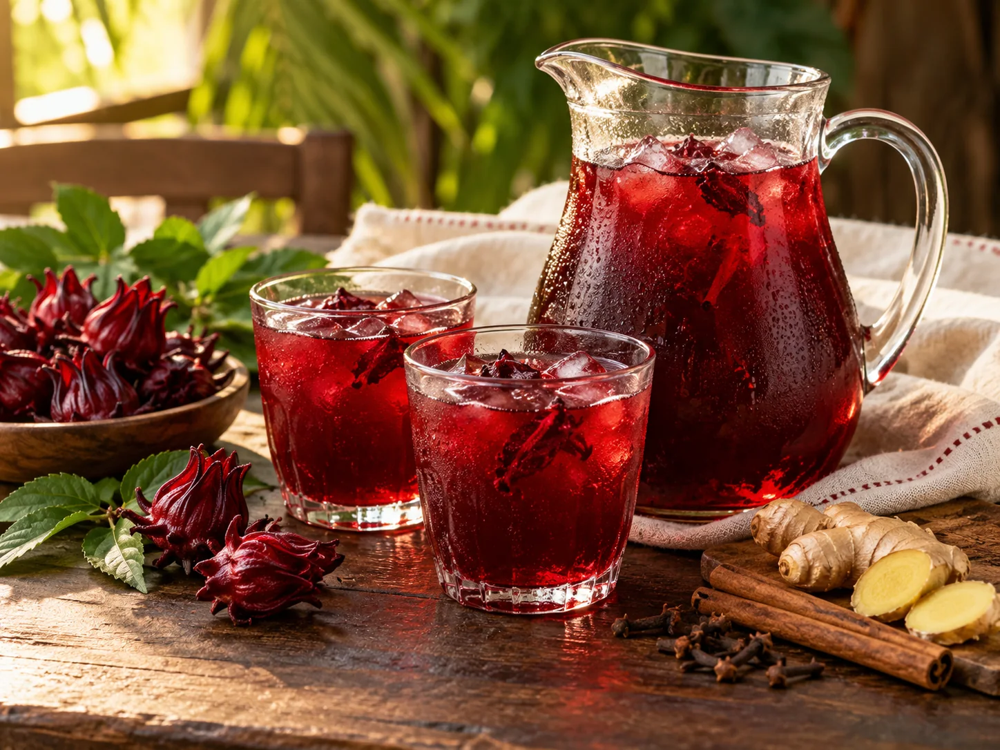
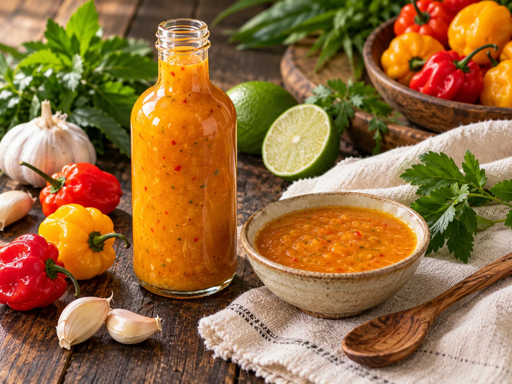

Valley Feast · The Cookbook
From our valley,
to your kitchen.
Recipes grown close to home, pots perfected by family, and the flavours that make Trinidad feel like Trinidad.
Find a recipe
Grown hereCooked here
Straight from the garden & pot
A little piece of Trinidad in every recipe.
Start with Sorrel and pepper sauce—the two things growing closest to this project. The cookbook is built to grow as new crops, family recipes and kitchen stories are ready.
Grow it. Bottle it. Share it.
The recipe begins before the kitchen.
Sorrel and peppers are grown with care, then turned into things the whole family can enjoy. Scan the label, meet the ingredient, and learn a Valley Feast way to use it.

Rather lime than cook?
We can feed the whole crowd.
Breakfast, lunch and celebration food from the heart of Maracas Valley.